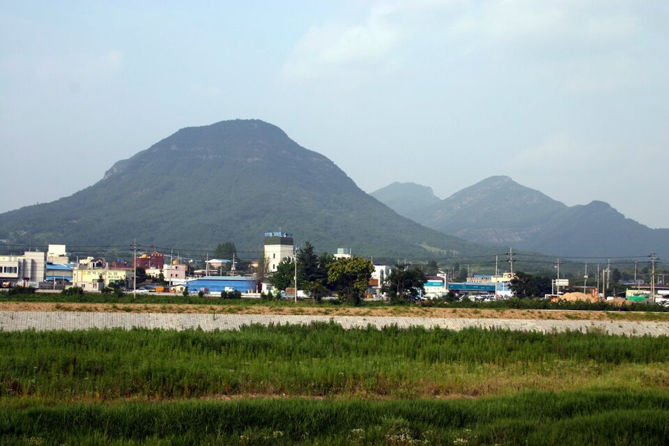

의성 검정고시 — 시험장에서 시간 쓰는 법

공부한 만큼 점수가 안 나오는 경우를 들여다보면, 몰라서가 아니라 아는 문제를 못 풀고 나온 경우가 꽤 됩니다. 시험장에서 시간을 쓰는 방식이 달라서 생기는 차이입니다. 경북 의성 검정고시를 준비하시는 분들을 위해, 시험지를 받고 나서 할 일을 순서대로 정리했습니다.
한 문제에 붙잡히지 않는 기준을 미리 정하세요
가장 많이 잃는 점수는 모르는 문제 하나를 오래 붙들다 뒤쪽의 아는 문제를 못 본 데서 나옵니다. 풀다 보면 "조금만 더 보면 될 것 같은" 느낌이 들어서 멈추기가 어렵습니다.
그래서 들어가기 전에 "읽고 손이 안 나가면 넘긴다" 같은 기준을 미리 정해 두는 편이 낫습니다. 기준은 시간이 아니라 느낌으로 잡아도 됩니다. 중요한 건 넘길지 말지를 그 자리에서 고민하지 않는 것입니다.
한 바퀴 돌고 두 번째에 돌아오세요
처음부터 순서대로 끝까지 가려 하지 말고, 풀리는 문제만 먼저 한 바퀴 도시길 권합니다. 넘긴 문제는 번호에 표시만 해 둡니다. 이렇게 하면 확실한 점수를 먼저 확보하게 되고, 남은 시간이 얼마인지도 그때 정확히 보입니다.
두 번째 바퀴에서 넘긴 문제를 다시 보면, 처음과 달리 보이는 문제가 생각보다 많습니다. 앞의 문제를 푸는 동안 관련된 내용이 떠올라 있기 때문입니다. 끝까지 안 되는 문제는 답을 비워 두지 말고 하나 골라 두시면 됩니다.
마킹은 몰아서 하지 마세요
답안을 마지막에 한꺼번에 옮기다 한 칸씩 밀려 쓰는 일이 생깁니다. 이건 실력과 무관하게 점수를 통째로 날리는 사고입니다. 한 바퀴를 돌 때 풀린 문제는 바로 옮겨 두고, 두 번째 바퀴에서 나머지를 채우는 쪽이 안전합니다.
옮긴 뒤에는 문제지의 마지막 번호와 답안지의 마지막 번호가 같은지만 한 번 보시면 됩니다. 이 확인 하나로 밀려 쓴 것을 대부분 잡을 수 있습니다.
전날에는 새 문제를 풀지 마세요
시험 전날 새 문제를 풀면, 모르는 게 나왔을 때 그 생각이 다음 날까지 갑니다. 전날은 이미 정리해 둔 것을 읽는 정도로 두시는 편이 낫습니다. 준비물과 시간, 가는 길을 미리 확인해 두면 당일에 쓸 힘을 아낄 수 있습니다.
검정고시는 평균 60점이 기준이고 과목별로 합격이 인정되는 제도라, 한 과목이 흔들려도 전체가 무너지지 않습니다. 한 과목이 잘 안 됐다고 다음 과목까지 놓지 않는 것이 당일에 가장 중요합니다.
의성에서 이렇게 함께합니다
저희는 1:1 맞춤 과외라 시험이 가까워지면 수업 시간에 실제처럼 시간을 재고 풀려 보고, 시간이 새는 지점을 같이 확인합니다. 넘길 문제를 고르는 기준과 마킹 순서도 자기 방식으로 정해 두실 수 있게 연습합니다. 의성과 인근 지역은 방문 수업이 가능하고, 거리가 멀거나 시간이 늦으면 화상(줌) 수업으로 집에서 그대로 진행합니다.
관련 검색어: 의성검정고시 · 의성검정고시과외 · 의성군검정고시 · 의성고졸검정고시